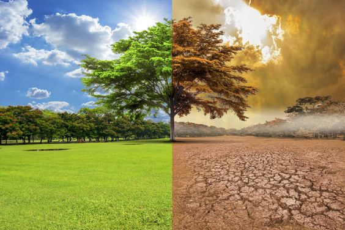
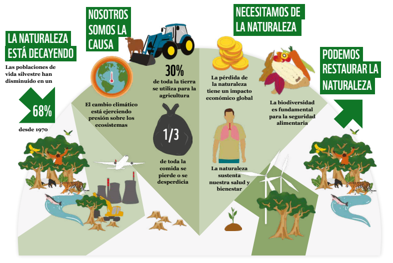

Nuestra Mision
En un mundo donde los efectos del cambio climático y la degradación ambiental son cada vez más evidentes, la promoción de prácticas sostenibles y de reciclaje se ha convertido en una necesidad imperante. La sostenibilidad no es solo una tendencia pasajera, sino una obligación moral y práctica que todos debemos asumir para garantizar un futuro viable para las próximas generaciones. Esta pagina explora las diversas formas en que podemos adoptar y promover estas prácticas, y el impacto positivo que tienen en nuestro planeta.
Impacto del Cambio Climático en la Biodiversidad y Cómo Revertirlo:
El cambio climático es una de las mayores amenazas para la biodiversidad en todo el mundo. Los cambios en los patrones climáticos, el aumento de las temperaturas y los eventos climáticos extremos están alterando los ecosistemas y las especies que dependen de ellos. Este artículo explora los efectos del cambio climático en la biodiversidad y las estrategias para revertir estos impactos.
Efectos del Cambio Climático en la Biodiversidad
 Alteración de los Hábitats- Desplazamiento de Especies: medida que las temperaturas aumentan, muchas especies se ven obligadas a trasladarse a altitudes más altas o a latitudes más septentrionales en busca de condiciones climáticas adecuadas. Esto puede llevar a la pérdida de hábitats adecuados y a la competencia con especies existentes en esas áreas.
- Pérdida de Hábitats Naturales: Los ecosistemas como los arrecifes de coral, los bosques tropicales y los glaciares están particularmente amenazados. Los arrecifes de coral, por ejemplo, están experimentando un blanqueamiento masivo debido al aumento de las temperaturas del océano.
- Desincronización de Fenologías: El cambio climático está alterando los ciclos de vida de muchas especies, como el tiempo de floración de las plantas, la migración de aves y la reproducción de anfibios. Esta desincronización puede afectar las relaciones ecológicas, como la polinización y la disponibilidad de alimentos.
- Alteraciones en las Cadena Tróficas: Los cambios en la disponibilidad de recursos debido al cambio climático pueden afectar a las especies en todos los niveles de la cadena alimentaria, desde los productores primarios hasta los depredadores.
- Especies Vulnerables: Muchas especies, especialmente aquellas con rangos geográficos limitados, baja capacidad de dispersión o requerimientos específicos de hábitat, son particularmente vulnerables al cambio climático. Esto incluye especies emblemáticas como el oso polar, que depende del hielo marino para cazar, y el leopardo de las nieves, que habita en áreas montañosas específicas.
Estrategias para Revertir los Impactos del Cambio Climático en la Biodiversidad
 Conservación y Restauración de Hábitats:- Áreas Protegidas: Establecer y gestionar áreas protegidas que permitan a las especies desplazarse y adaptarse a nuevos hábitats es crucial. Esto incluye la creación de corredores biológicos que conecten diferentes áreas protegidas.
- Restauración de Ecosistemas: La restauración de hábitats degradados puede ayudar a aumentar la resiliencia de los ecosistemas al cambio climático. Esto incluye la reforestación, la restauración de humedales y la rehabilitación de arrecifes de coral.
- Reducción de Emisiones de Gases de Efecto Invernadero: La mitigación del cambio climático a través de la reducción de emisiones es esencial para proteger la biodiversidad a largo plazo. Esto puede lograrse mediante la transición a fuentes de energía renovable, la mejora de la eficiencia energética y la implementación de políticas de reducción de carbono.
- Captura y Almacenamiento de Carbono: Las soluciones basadas en la naturaleza, como la reforestación y la restauración de ecosistemas costeros, pueden actuar como sumideros de carbono y ayudar a mitigar el cambio climático.
- Planes de Adaptación Específicos para Especies: Desarrollar e implementar planes de adaptación específicos para especies en riesgo puede ayudar a aumentar su resiliencia al cambio climático. Esto puede incluir la gestión de hábitats, la reubicación asistida y la mejora genética.
- Monitoreo e Investigación: El monitoreo continuo de las poblaciones de especies y los ecosistemas es esencial para comprender los impactos del cambio climático y evaluar la efectividad de las estrategias de conservación.
- Educación Ambiental: Aumentar la concienciación sobre el cambio climático y su impacto en la biodiversidad puede fomentar un comportamiento más sostenible y el apoyo a las políticas de conservación. Esto incluye programas educativos, campañas de sensibilización y la participación comunitaria.
- Participación de las Comunidades Locales: Involucrar a las comunidades locales en la conservación y la gestión de los recursos naturales es fundamental para el éxito a largo plazo de las estrategias de adaptación y mitigación.
- Implementación de Políticas Ambientales Efectivas: Los gobiernos deben implementar y hacer cumplir políticas que protejan la biodiversidad y aborden el cambio climático. Esto incluye la regulación de las emisiones de gases de efecto invernadero, la protección de hábitats críticos y el apoyo a la investigación y la innovación en conservación.
- Cooperación Internacional: El cambio climático es un problema global que requiere soluciones globales. La cooperación internacional y la implementación de acuerdos ambientales, como el Acuerdo de París, son esenciales para abordar los impactos del cambio climático en la biodiversidad.
Conclusión
El cambio climático representa una amenaza significativa para la biodiversidad global, pero existen estrategias efectivas para mitigar sus impactos y revertir el daño. La conservación y restauración de hábitats, la mitigación de las emisiones de gases de efecto invernadero, la adaptación específica para especies y la concienciación pública son componentes clave de una respuesta integral al cambio climático. Al trabajar juntos a nivel local, nacional e internacional, podemos proteger la biodiversidad y asegurar un futuro sostenible para todas las formas de vida en nuestro planeta.